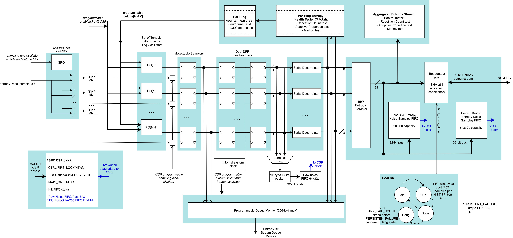
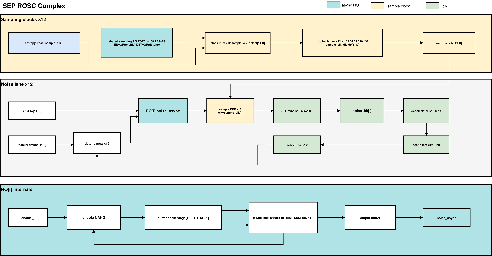

Entropy Source
The entropy source component is a random number generator which is based on multiple asynchronous ring oscillators sampled in such a way to generate random bits from the jitter noise and metastable latching behavior. It forms the basis of a True Random Number Generator (TRNG).
The generated stream is ``raw'' noise in the sense that there may still be some statistical biases present which need to be filtered out by an optional entropy conditioner post processing unit which would consume the output noise bits. NIST specifies a set of acceptable conditioners. Common conditioners are based on standard hash functions such as SHA256 and ASCON as well as standard keyed hash functions such as AES-CMAC and HMAC.
The source includes a configurable SHA-256 whitener. Software can bypass whitening to observe the unconditioned stream; health tests also monitor the individual noise generators and the combined stream.

Figure 1 shows the entropy source and its conditioning pipeline. The client controls the component via the AXI4-Lite bus interface which provides access to a set of memory mapped configuration and status registers (CSRs) described later in this document. The noise generators feed the decorrelation, mixing, health-test, and optional whitening stages before the output FIFO supplies entropy to the DRBG.
The entropy source is designed according to guidelines set forth in the NIST SP800-90B specification and is planned to be ready for FIPS 140-2 and 140-3 certification. It will also be compliant with AIS31 statistical requirements specified by the BSI agency.
Figures and tables: Figure 1.
1. Noise Generation
The entropy source uses 12 independent ring oscillators as its noise source. Each ring oscillator is constructed from the shared OCAH primitives (prim_clock_nand2, prim_buf, prim_stdmux2) to preserve the asynchronous feedback-loop structure through technology mapping. Each oscillator has two configurable lengths: a TOTAL_LENGTH and a TAPPED_LENGTH, where a multiplexer selects between the short and long feedback paths. The entropy_rosc_tune_fsm toggles between these two lengths on a rising edge of any health test failure, providing a rudimentary frequency detuning mechanism.
The oscillator output is sampled by a metastable D flip-flop (prim_flop) clocked by a sampling clock. The sampled bit is then synchronized to the system clock domain through a two-stage synchronizer. Each lane can be clocked either by an external sampling clock (rosc_sample_clk_i) or by a shared internal ring oscillator (total length 109, tapped length 53). A per-lane ripple divider provides division ratios of 1, 2, 4, 8, 16, and 32, selected through the CSR. Both selects are clock mux cells. Software changes a lane’s source or division only while that generator is disabled. A division value outside 0-5 selects divide-by-4.
Figure 2 shows the ring oscillators, sampling paths, and clock selection used to generate noise.

Figures and tables: Figure 2.
2. Decorrelation and BIW Mixing
Each sampled noise bit enters a serial decorrelator (entropy_decorrelator), which shifts bits through a 29-stage shift register with XOR feedback. A downsample counter derived from the sample_clk_div CSR field determines how frequently the top 8 bits of the shift register are latched and emitted as an entropy byte. A per-byte mask allows individual bit lanes to be disabled. The decorrelator can be bypassed through a CSR control bit, in which case raw noise bits pass directly to the output.
The 12 decorrelated byte streams are combined by the Barak-Impagliazzo-Wigderson (BIW) stage, which uses four gf_muladd instances performing y = a*b + c in GF(2^8) with the AES field polynomial (0x1B). The 12 input bytes are grouped into three sets of four and reduced to a single 32-bit word. This mixing step improves the statistical independence of the output without introducing significant latency.
3. Health Testing
Health tests operate at two levels. Each of the 12 entropy_generator instances runs an 8-bit entropy_health_test on its individual decorrelated output. At the top level, a second 32-bit entropy_health_test instance monitors the post-BIW (or post-bypass) stream.
The health test wrapper instantiates three OpenTitan-derived test modules. The repetition count test (entropy_src_repcnt_ht) tracks consecutive identical values per bit lane and flags when a threshold is exceeded. The adaptive proportion test (entropy_src_adaptp_ht) accumulates per-bit ones counts within a configurable window and compares the maximum and minimum lane counts against high and low thresholds. The Markov test (entropy_src_markov_ht) counts bit-pair transitions and compares to high and low thresholds at window boundaries. Window synchronization is driven by a prim_count counter in the entropy_generator_complex.
Health test thresholds, enable bits, and window sizes are all programmable through the CSR interface. Test status is reported as an 8-bit vector where bit 0 indicates a repetition count failure, bit 3 an adaptive proportion failure, and bits 4-5 Markov high/low failures.
4. Health Test Watermark
HT_WATERMARK is one shared register whose source and maximum/minimum direction are selected by HT_WATERMARK_NUM; there is no independent storage per selector. A selector write changes which counter updates the shared register but does not clear it, so changing only the selector carries the value recorded by the previous mode.
The shared watermark is armed by a CTRL.MODULE_ENABLE 0-to-1 transition. High modes (REPCNT_HI, APT_HI, and MARKOV_HI) arm to 0x0000; low modes (APT_LO and MARKOV_LO) arm to 0xFFFF. A hardware reset restores the selector and watermark together. Software that needs a deterministic baseline must write HT_WATERMARK_NUM before toggling MODULE_ENABLE. With the reset-default MODULE_ENABLE=1, the power-on enable pulse performs the first mode-aware arm automatically.
5. Persistent Failure and AlertHang
The health-test subsystem includes a persistent-failure path that halts entropy output when failures persist beyond a programmed threshold. A saturating counter (ALERT_SUMMARY_FAIL_COUNTS.ANY_FAIL_COUNT) records one count per health-test window in which any test failed; a mid-window failure of the continuous repetition-count test is captured and counted once for that window. When the counter reaches ALERT_THRESHOLD.THRESHOLD (default 4, i.e. four failing windows, locked by FIPS_LOCK), alert_thresh_fail is asserted and the main FSM transitions through AlertState into AlertHang, halting entropy output. AlertHang persists until the FSM is reset by rst_ni or software clears CTRL.MODULE_ENABLE. The event sets MAIN_SM_STATUS.ALERT and raises INTR_STATUS.PERSISTENT_FAILURE. The sticky MAIN_SM_STATUS.ALERT and MAIN_SM_STATUS.ERR status bits are cleared by writing 1 (W1C) or by the full entropy-source reset.
Setting ALERT_THRESHOLD.THRESHOLD to zero disables the comparator, leaving the counter accumulating without ever asserting alert_thresh_fail.
6. SHA-256 Whitening
When the SHA-256 whitener is enabled via the CSR, the 32-bit BIW output stream feeds into the entropy_sha256_whitener module. This module accumulates 16 consecutive 32-bit words (one SHA-256 block of 512 bits), computes the SHA-256 digest using the OpenTitan prim_sha2_32 primitive, and emits the 8-word (256-bit) digest. The compression ratio is 2:1 (16 input words produce 8 output words). When the whitener is disabled, the BIW output passes through to the FIFO without modification.
7. Output FIFO
The conditioned entropy stream is stored in a 64-entry FIFO (entropy_fifo). Each entry is 36 bits wide: 32 data bits plus 4 byte-wise odd parity bits. The FIFO includes pointer integrity checking (normal and inverted pointer pairs with mismatch detection) and parity verification on reads. An optional churn mode XORs the incoming data with a word read from the diametrically opposite FIFO position, improving entropy distribution. Overflow, underflow, parity error, and pointer error conditions are all reported to the CSR block and can trigger interrupts.
The FIFO output drives the entropy_stream_data_o and entropy_stream_vld_o top-level ports. These connect to the DRBG ingress path and to the distribution network for entropy consumers such as cryptographic accelerators.
8. Reset
The entropy source rst_ni input resets its register block, health-test/FSM
state, conditioning pipeline, counters, and FIFOs. Reserved CTRL[0] reads as
zero and ignores writes.
At SEP integration level, SEP_RESET_CTRL.SW_RESET_N.TRNG_SW_RST_N requests a
shared reset of the entropy source and DRBG. Hardware first drains and isolates
the ESRC, CSRNG, and EDN AXI ports, then asserts the common reset. This is a
full-IP reset: all entropy-source CSRs and FIPS_LOCK return to reset values.
Post-mux EDN adapters and the fabric entropy pool remain in the POR reset domain;
they synchronously clear buffered entropy while the internal reset is active.
After reset release, MODULE_ENABLE returning to one produces the normal
enable pulse and restarts startup health testing before entropy is released.
9. Debug Observation Pin
DEBUG_CTRL.SELECT_SIGNAL routes one of 256 internal signals to the
signal_monitor_o output, and DEBUG_CTRL.SELECT_FREQ_DIV divides it down for
external observation. Some selections expose entropy ahead of conditioning: the
raw per-generator noise bits, the compressed 32-bit entropy stream, and the
uncompressed per-generator entropy bytes.
Neither field is covered by FIPS_LOCK, and that is deliberate. The lock
freezes the certified health-test configuration; it does not govern what is
routed to an observation pin. Gating the pin is therefore an integration-time
decision rather than a property of this block. SEP leaves signal_monitor_o
unconnected and false-paths the port in synthesis, so the signal stops inside
the block and no further gating is required there. An integration that routes
the pin off-chip, for example muxed onto a GPIO, owns restricting DEBUG_CTRL
to the lifecycle or debug-enable states in which observing pre-conditioning
entropy is acceptable.